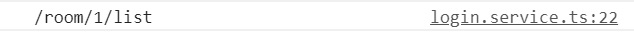
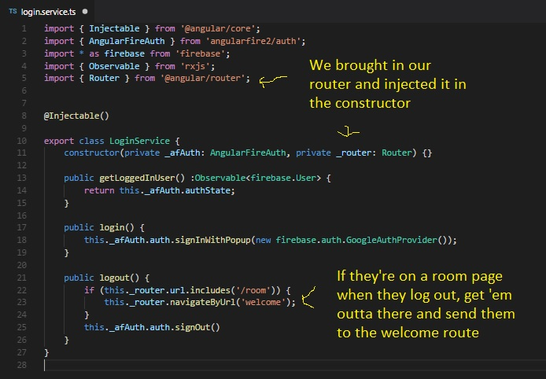

Thanks to a certain someone, we've found a hole in our login guard.
Sorry about that.
We made it specifically to avoid someone accessing our rooms without logging in. But if someone logs and visits the room page and then logs out, they will have access to all room related activities. That's a bummer, so how do we fix it?
One solution can be to make sure that if someone logs off, we kick them out to the welcome screen. We haven't gone over the conditions yet, but we know the trigger for our action: Logging off. And we know where that happens: Our login service.
So let's examine our logout method. We call the firebase signOut method which we still want, but we also want to check to see if they're currently on a room page. Is there any tool that we can use to figure out which route we are on? There sure is, and it requires us to bring in Router from @angular/router.
Let's add that to our imports up top and inject the router into our service:
import { Router } from '@angular/router';
constructor(private _afAuth: AngularFireAuth, private _router: Router) {}
Now we have access to some router tools, and the one we are interested in is .url. This neat method returns the value of the current route that the user is on. If I was to console.log the result of Router.url in my logout method while I was visiting a room component, this would be the result:
If you named your room routes differently, you might have a slightly different result. In my case, the route to my room is simply named 'room'. Therefore I can use .includes to make sure my route satisfies my condition:
if (this._router.route.includes('room') {
}
Almost there. We now check to see if they're on a room but now we need a way to actually send them back to the welcome screen. Surely there must be something in Router that would allow us to navigate someone to a different location. There is, and you might be able to find it if you trigger your intellisense on your router, but if you can't, the correct answer is .navigateByUrl
if (this._router.route.includes('room') {
this._router.navigateByUrl('welcome');
}
If you did trigger your intellisense, you probably noticed a '.navigate'. That could work here too, but requires a different syntax. If you want more information, it is in the documentation for Angular, but I might go over it in a later lesson.
All set! Now my logout function checks to see if they are on a room route, and if they are, we kick 'em out. You shall not stay! Try it out and see if it works for you.
Here's one look at my login service:
